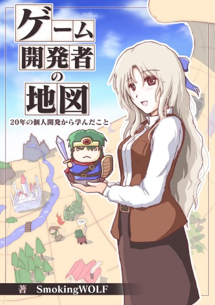

シルバーセカンド開発日誌
■
2017-02-18 (土) バランスが崩れやすい要素の話▼【バランスが崩れやすい要素の話】
今回はゲーム開発側から見て、ターン制バトルで「簡単にバランス崩壊しそうで恐い」と
個人的に思っている要素について、思いついたまま書いていきたいと思います。
これから話す内容は、「急激に強くなったり弱くなったりする可能性」を秘めているため
開発者として扱うのもドキドキしますが、
遊ぶ側も別の意味でドキドキできるという意味で、
弱点にも強みにもなりうると考えている要素のお話です。
今回のテーマは以下の3つです！ 興味がある方はぜひお読みください。
・強すぎる？ 弱すぎる？ 『連続攻撃』の調整の難しさ
・ダメージ０で無敵！？ 『引き算の防御力』の可能性
・速すぎる！ ウェイトターンバトル×制限なく上がる速さの組み合わせ

【強すぎる？ 弱すぎる？ 『連続攻撃』の調整の難しさ】
ここでは文脈的に、「コストなしで撃てる連続攻撃」を前提とします。
たとえばロボット系シミュレーションにおけるマシンガン系の装備をしたロボや、
RPGにおいて二刀流という特殊能力を持ったキャラの通常攻撃などですね。
連続攻撃は、制御がすごく難しい要素です。
一発一発に「攻撃力」の値が加味されたり、かつ敵に防御力の概念があったりすると
非常に扱いが難しくなります。
たとえば例として、以下のような状況が発生する場合があります。
私が遊んできたゲームにもいくつかガッツリ当てはまるのがあります。
【ケース1 連続攻撃が強くなりすぎる！】
1．開発者「普通の攻撃は10点x1回になるようにして、連続攻撃は3点x3回くらい与えるようにしよう」
2．プレイヤー「レベルアップしたり装備付け替えたりパラメータ割り振りして攻撃力に特化するぜー！」
3．プレイヤー「攻撃力が30上がって連続攻撃で33点x3回＝99点のダメージを与えられるぜー！
普通の攻撃は40点x1回ダメージで弱すぎぃ！」
4．開発者「喜んでもらえるのは嬉しいけどこれだと連続攻撃一択になっちゃうなあ……」
【ケース2 連続攻撃のダメージが通らない！】
1．開発者「敵の防御力を最初は5点に設定するとして……。
単発攻撃キャラは攻撃力15で10ダメージx1回与えられるようにして、
連続攻撃キャラは常にその半分の攻撃力8で3ダメージx3回くらい与えるようにしよう」
2．開発者「今回は後半になるにつれてしっかり
敵の防御力が上がっていくようにするぞ！
ケース1の愚はおかさない！」
3．プレイヤー「後半で敵の防御が25になった！
こっちの単発キャラの攻撃力は40あるから
普通の単発攻撃で40－25＝15ダメージ出るのはいいんだけど、攻撃力半分の
連続攻撃キャラが全部20-25＝0ダメージで役立たずになっちゃったんだけど……」
4．開発者「しまった今度は連続攻撃キャラが不遇に……ぐおお！」
何のゲームか忘れましたが、私はどちらのケースも
プレイヤーとして体験したことがあります。
そして開発側になった今、私はこの経験から
「連続攻撃は非常に注意して設定する必要がありそうだ」と考えるようになりました。
ただ、このケース1と2は、うまく調整して強さが偏りすぎない限りは、
「工夫次第で結果が大きく変化する」ものなので、すごく面白い要素なんですよね。
ケース2の敵味方の立場を入れ替えれば、
「敵として出てくる連続攻撃キャラ」に大苦戦してたけど
こちらの防御力を上げたら完封できた！
なんて体験ができる可能性もあるので、大きな可能性を感じられます。
一方で、やっぱりバランスが不安定になりやすいとは思いますので、
注意深い設定が要求されそうです。
実際に作る側になると、意外と「一発が小さいんだから合計ダメージだけでも
強くしないと同じくらい強く見えない！」となぜか思ってしまいがちで、
それも余計に強さの偏りを招く原因になる気がしています。
皆さまはいかがでしょうか。
さて、以下はおまけの一例で、
「あまりドキドキはしないけれど、作りやすくてバランスを安定させやすい」
連続攻撃の例です。
【おまけのケース3 最終ダメージの？％を何度も与える連続攻撃にする】
例えば攻撃力200、敵の防御100なら、
200-100で単発なら100ダメージ与えられるのに対し、
「連続攻撃なら単発の最終ダメージの33％を3回与える」
という風にして、33！ 33！ 33！
と出して連続攻撃を表現する方法もあります。
これは数値を非常に安定させやすく、単発攻撃と連続攻撃を混ぜた場合の
ややこしいバランス調整をすることも考えなくていいので、開発者的には非常に楽です。
一方で、遊ぶ側の「バランスが崩れかねないドキドキ感」は
あまり感じられないんですけれどね。
「でもこれならもダメージ効率的には単発攻撃と一緒じゃん、何が違うのさ！」
ですって？
確かに一見そう見えます。もし連続攻撃を単発攻撃とゲーム的に差別化するとしたら、
一つは「命中したかどうかを判定する回数が多い」点などでしょうか。
たとえば「HPが1しかないけど回避率が80％で全然攻撃が当てられない敵」がいた場合、
命中率100％で単発100ダメージ与えられるキャラは
20％の確率でしか攻撃を当てられませんが、
命中率100％で33ダメージx3回攻撃できるキャラなら
だいたい49％の確率で一発以上当てられます。
（3回とも回避される確率は0.8×0.8×0.8＝0.512、つまり51％）
こういう場面だと、3回に割った連続攻撃の方が有利です。
ただしこのケースの場合、ダメージ効率が一緒だと
連続攻撃の方が有利になっちゃうので、
同じ命中率なら連続攻撃の方をダメージ効率を低めにした方がいいかもしれませんね。
単発なら100ダメージ1回、連続攻撃なら25ダメージを3回、といった具合です。
あるいは、命中率そのものを低くして
ダメージの振れ幅が大きい攻撃という立ち位置にする、
などでもいいかもしれません。差別化の仕方も千差万別！ お好きにどうぞ！
ということで連続攻撃についてお話をしてみましたが、いかがでしょうか。
ゲームのプレイ中に、上のケース1や2にあるようなバランスの危険さを感じ取ると、
個人的には「どう工夫すればバランス崩壊レベルの結果が出せるかな！？」
とワクワクします。
普通に連続攻撃を導入するなら「装甲が薄い敵や回避率の高い敵には連続攻撃が有効」、
「そうでない敵には単発攻撃が有効」、
と差別化するのが比較的いいやり方なんでしょうけれど、
実際はどちらかに極端に偏りそうで、
いい塩梅のバランスを取るのはなかなか難しそうです。
【ダメージ０で無敵！？ 『引き算の防御力』の可能性】
これをお読みのあなたは、「パラメータを自由に割り振れる」システムを持つゲームを
遊んでいるとき、割り振れるパラメータの中に「防御力」という項目があったときに
ある可能性が脳裏によぎるかもしれません。
「これ、もしかして防御力を上げまくれば敵からの攻撃を完封できるんじゃ？」
その可能性がすぐ思いつく人は、たぶんけっこうなゲーム経験者の方だと思います。
『引き算の防御力』は多くのRPGで使われています。
たとえば、攻撃力10の敵が防御力4の味方に攻撃した場合、受ける最終ダメージが
10-4＝6ダメージになったりする、という風に、
防御力は敵の攻撃を防ぐための能力値です。
世の中には「割合」で防ぐ防御力もたまに使われます。
ここで話すにあたって、便宜上「引き算の防御力」に対して
「割合防御力」と名付けましょう。
それぞれ、以下のような違いがあります。
・引き算の防御力： 攻撃力10に対して受ける側の防御力5なら、
10－5＝5で最終ダメージが5になる。
・割合防御力： 攻撃力10に対して受ける側の防御力が20％なら、
10×0.20（20％）＝2点防いで、最終ダメージが8になる。
そしてここで話すテーマは、『引き算の防御力』の方です。
これ、ちょっと油断すると一気にゲームっぽさが失われる、結構危険な要素です。
たとえば攻撃力と防御力がほぼ拮抗して
ダメージ算出されるゲームをデザインしていると、
実際のプレイ中で以下のようなことが起きやすくなります。
【ケース 攻撃力と防御力が拮抗する状況のプレイ】
1．開発者「攻撃力30、防御力25で5ダメージを与えられるのが
ある時点の標準バランスとしよう」
2．プレイヤー「うひょー攻撃力が30から35になっただけで
与えるダメージが5→10の2倍になったぜー！」
3．プレイヤー「と思ったら次のエリアの敵の防御が35で
ダメージがまったく通らないぜー！」
4．プレイヤー「でもこっちもアクセサリ付けて防御を上げたら
受けるダメージが0になったぜー！」
つまり、与えるダメージがあっというまに何倍にもなったり、
逆に受けるダメージがあっという間にノーダメージになったりするのです。
装備でたった数ポイントの攻防の数値が変わるだけでも結果が大きく変化するので、
装備の組み合わせを試行錯誤したりするゲームならば、このように
攻撃力と防御力が拮抗してるのはかなり面白いゲームになるかもしれません。
また、プレイヤーのクリア想定レベルを開発者側でかなりガチガチに制御したい場合も
攻防が拮抗したこういうバランスがよく使われている気がします。
たとえば「一定レベル以上にならないとボスにほとんどダメージが通らないゲーム」
など、昔のゲームだとよく見たことはないでしょうか？
一方で、「かなり慎重なバランス取りが求められる」という意味においては、
この「引き算の防御力」はバランスが壊れやくて危険な要素です。
特に上の例にある4番の場合の「防御力を上げたら無敵になった」
というのが一番危険で、
こうなるとゲームを遊ぶにあたって何も考えなくてもよくなってしまいます。
棒立ちでバシバシ攻撃を受けても1ダメージや0ダメージしか受けない主人公！
強い！ けどゲームになってない！
最初から救済目的の調整なら、それでいいんですけれどね。
では引き算の防御力を導入した上で、
プレイヤー側が無敵にならないようにするためにはどうするか？
だいたいの場合は、攻撃力に対して防御力を半分以下に設定することで、
そういった問題を起きにくくしている印象があります。
例えばドラゴンクエストでは、「こうげき力」で与えられるダメージはその数値の1/2、
「しゅび力」で防御できるダメージは数値の1/4なので、
攻撃力250、防御力250同士の人が殴りあった場合は、
お互いに「(250/2-250/4)＝約62ダメージ」は通るわけです。
でもさらにそれが進んで、あまりにも防御力の影響が小さくなってしまった場合、
防具を更新しても「耐えられる打数」が変わらなくて
防御力に意味がなくなることがあるので、
この辺りは強すぎても弱すぎてもダメということで、
調整が難しいなと感じるところです。
ちなみに私の場合は、防御力の慎重な調整に開発コストを取られるのは好かないので、
ほとんどの場合では防御力の導入をしません。
たとえば『片道勇者』でも、ほとんどの敵には防御力を持たせておらず、
大部分の敵の防御力＝装甲は「0」です。つまり主人公の攻撃力がそのまま通ります。
そして「特に硬さがありそうな敵」だけ装甲を設定したり、盾を持たせたりしています。
味方にも防御力はありますが、効果はだいぶ小さめです。
盾みたいな、一定確率で防御するアイテムはめちゃ強力ですけれどね！
とにもかくにも、「敵を倒すための打数」が同じならば、
HPと防御力の両面を絡めるより、HP一つだけで計算した方が調整が簡単になります。
「防御力」を使わないバランス設定は、個人的には意外とおすすめですよ。
＜おまけ話 割合防御力ってどうなの？＞
余談ですが、「敵の硬さを表現したいけど、実際はそこまで硬くしたくない」場合や、
「プレイヤー側からのダメージが敵に通らないのが恐い」場合は
硬さを表現するにあたって「割合防御力」が便利でした。
たとえば『片道勇者』では、敵に接頭辞が付いた
「＜やたら硬い＞野犬」などが出てきます。
ゲーム中では、こういった敵に殴りかかると普段の半分以下しか
ダメージを与えられないので、ものすごく硬く感じます。
が、それでも主人公の与えるダメージが0になることは滅多にありません。
実はここで使われているのは主に「割合防御力」で、「やたら硬い」効果を
「受けるダメージを50％カットした上で最終ダメージ-5」という処理にしているためで、
どんなに弱いクラスでもレベル1で攻撃力17以上ある主人公なら
与えるダメージは0にはならないのです（最低でも17/2-5＝約3ダメージは出る）。
それでいて、与えられるダメージはいつもの半分以下に激減します。
プレイヤー側は敵の防御力がどのくらいかが見えないことが多いので、
こうすることで実質耐久力がほぼ2倍なだけの
「硬いように見える敵」を作ることができます。
さらに「全くダメージが通らず一方的にやられる」心配も少ないので、結構便利です。
またこれとは別に、「属性」への防御などには「割合防御力」がよく使われてますよね。
「炎ダメージを30％減少させる」とか、ああいった類の効果です。
これも数値が100％に達しない限りは無敵にするのは難しいので、
扱いやすい印象があります。
【速すぎる！ ウェイトターンバトル×制限なく上がる速さの組み合わせ】
この話はプレイヤーには見えにくい処理なので、開発側の話になります。
あんまり面白くない話かもしれませんので、飛ばしても大丈夫です。
『片道勇者』では、敵味方の行動回数の算出において、
内部的に以下のようなウェイトターン方式を採用しています。
どんなものかというと……。
・敵味方には「1ターンのウェイト値」が設定されている。敏捷0時のウェイト値は30。
・このウェイト値は1ずつ減り、0になると行動できる。
・能力値の『敏捷』が高くなると、「1ターンのウェイト値」が小さくなる。
1ターンに要する時間が短くなるので、状況によっては連続で動ける。
例：敏捷0だとウェイト値30だが、敏捷5になると「1ターンのウェイト値」が28になる。
上がっていった果てにウェイト値は20まで減る。これは最初の1.5倍の速さ。
ウェイト値20の主人公は、普通の速さの敵が2回行動する間に3回移動できる。
この方式は速度の微妙な差を表現する上でたまに使われます。
たとえば、100％（30/30）の速度と111％（30/27）の速度の差を
表現できたりするのです。
【残りウェイト値の推移（1ターンのウェイトは、主人公は27、敵は30とする】
[主人公] 4 → 0（行動）→ 27 → 1 → 1 → 0（行動） → 27 → 0（連続行動）
[敵] 30 → 26 → 26 → 0（行動）→ 30 → 29 → 29 → 2 .
これだけ見るとややこしいかもしれませんが、主人公→敵→主人公→主人公→ と、
途中で主人公が連続行動できる状況を表現しています。
とにもかくにも、「相手より速い側がたまに連続で行動できるシステム」
くらいに思っておいていただければ結構です。
ただしこのシステム、ウェイト値が無限に下がる要素が入っていると、
最終的にとんでもないことになります。
たとえば、ウェイト値が極限まで下がった果てに
1ターンのウェイトが「1」になってしまったら、
なんと最初のキャラの「30倍」の速度で動けてしまうのです！
そうでなくともウェイトが「2」だと15倍、「3」だと10倍と、
ウェイト値が小さい段階まで行くと1の差による速度差がめちゃくちゃになるので、
皆さんのゲームをしていてこういう要素が搭載されていると、
どこまで速度を上げてしまえるのか私は非常にドキドキしてしまいます。
よくできたゲームなら速度の限界値がきっちり設定されているので、
限界が見えると安心できます。
たとえば『片道勇者（プラス）』では、
主人公の最大速度が1.5倍に設定されているのです。
が！ 実は『片道勇者プラス』では敵の方に最大速度を設定し忘れていて、
敵の種類と接頭辞の組み合わせ次第で
「10～15倍速以上」で動く敵が出るようになっていたというひどい事件があり、
公開後1年くらい経ってようやく修正したという顛末があります。
「画面の端に一瞬白い鳥人が見えたと思ったら、
次の瞬間に目の前に敵が来て何度も殴られ続ける主人公！」
という、ひどい状況が起きていました。
今は、どんなに速くても敵の速度は「最大5倍速」くらいになっています。
そのときはだいたい主人公も「1.5倍速」まで成長しているので、
最高速の敵は3～4歩ずつ近付いてくる計算です。まだ何とかなりそうですね。
ということで、この項目は私自身への戒めの意味でも追加しています。
ウェイトターン方式を使うなら、敵にも味方にも忘れずに
限界速度を設けておきたいですね！！
【まとめ】
ということで、慎重に調整しないと大変なことになりやすいと考えている要素について、
いくつか紹介させていただきました。
もちろんこれら以外にもバランス的に危険な要素は無数にありますが、
ひとまず今回の要点を整理すると、結論はだいたい以下の2点にまとめられそうです。
・X倍で増えていく要素は調整が難しい（連続攻撃のダメージ）。
・0に近付いていく要素はヤバい（引き算の防御力、ウェイトターンの速度の計算）
→ なので制限を設けた方が安全そう。
特に「0に近付いていく要素」の方は制限なしだと
無思考なゲームプレイの元になりやすいので、
今後も使う際はちょっと注意していきたいなと考えている部分です。
防御力を上げてずっと無敵になってしまったり、
速度を上げて敵の3倍速で動けたりしたら、
ほとんど作業プレイになっちゃいますから、それはもったいない！
私のゲームでそんな状況になることがあったら、まさに私の未熟さの致すところです。
とはいえ、これまで挙げた要素は開発者的に扱いは難しいものの、
うまいこと使えるとプレイヤー側としてはすごく爽快なものになりえます。
「補助をかけまくって連続攻撃で莫大なダメージが出せたりする」のも、
「防御力アップによる無敵化」も、「敵を圧倒できる超スピード」も、
「一時的にだけ」達成できるものなら非常に爽快で面白くなりそうです。
これらはちょっぴり『劇薬』なだけで、それならそれで注意して、
状況に合わせて使えば問題ないのです。
ちょっぴり危ういバランスで遊ぶ人をドキドキワクワクさせたいと考えているなら
苦労してでもぜひ導入すべきかもしれませんし、逆に調整の時間が取れない状況下や、
検証のコストを上げたくない場合はこれらの要素をあまり使わない方がいいでしょう。
どんな要素も、使う価値があるかどうかはそのとき状況次第！
状況に合わせて適切なカードを出していきたい限りです。
……とはいえ、私は『引き算の防御力』に関しては、
これからもあまり入れない気がします。
「一定確率でだけ強い防御力を発揮できる」、
「少ない回数だけ無敵」といったものなら
強力にしてもいいと思うんですが、長いこと持続する防御力の扱いには、
どうしても慎重になってしまいますね。
そのせいで、『シルフェイド幻想譚』といい『片道勇者』といい、
私のRPGでは防具を着けなくてもさほど問題ないゲームが多くなってしまっています。
それはそれでどうなんだと思いながらも、私が「防御力」を
上手に使いこなせるようになるにはまだまだ道のりが遠い気がします。
しばらくは、半裸で冒険する主人公が活躍してしまいそうです。
他に聞いてみたいことや、私の想像力を試したい内容、
この記事へのコメントやご感想などあればぜひ拍手コメントからどうぞ！
お答えできそうなものは随時お答えしていきます。
|  | ← 今回のような記事を
1冊の本にまとめたゲーム開発本、
『ゲーム開発者の地図』、
Kindleで好評発売中です！ |
■
2017-02-04 (土) 3ﾀｰﾝ攻撃力1.3倍になる魔法▼※こちらの記事は第1稿でイマイチなデキなので、
より面白く整理された、以下の本の「サンプル部分」を
お読みいただくことを推奨します。
（今回の内容とまったく同じ範囲までサンプルで読むことができます）
→ 『ゲーム開発者の地図』販売ページ
リンク先の「左上の表紙」をクリック/タップすると、
ブラウザからすぐ試し読みサンプルを読むことができます。
【「3ターン自分の攻撃力を1.3倍」にする補助魔法、使う？】
さて、突然ですが問題です。
あなたはとあるRPGをしており、主人公は今
「3ターン自分の『攻撃力』を1.3倍」にする補助魔法が使えます。
・この補助魔法の消費MPは3、今の主人公の残りMPは25です。
（消費量に意味はなく、「多少のコストが必要」という意図です）
・このゲームはよくあるターン制バトルのRPGです。
・主人公は補助なしで戦えば12ターンかけて勝てる程度のHPの敵を相手にしています。
・敵に防御力はなく、「攻撃力＝そのまま与えられるダメージ」になるものとします。
・味方は主人公一人で、1ターンに1回行動できます。
さて、この「3ターン自分の『攻撃力』を1.3倍」にする補助魔法、あなたは使いますか？

「攻撃するのも補助魔法を使うのにも1ターン使うの？」 はい、使うものとします。
「『3ターン攻撃力アップ』って、つまり攻撃力が上がった状態で
3回分殴れるってことでいい？」
はい、3回分殴れますよ。
「これ途中で回復のターンがはさまるから3ターン分殴れなくない？」
今回は回復を考慮しません。とりあえず敵の攻撃は
4～5回くらい耐えられるものとします。
では皆さんのお答えは？
「少しでも早く倒せそうならMPを消費してでも補助魔法を使っちゃう」？ いいですね。
「まだダンジョンの途中かもしれないから使わず温存して戦う」？ なるほど。
「補助魔法の重ねがけとかできないの？」って？ してもいいですよ。
「もし回復魔法も使えるのなら、MPをそっちに回そうかな」ですか？
うーん、微妙に正解に近いですが、求めている答えはちょっと違うんです。
「もしかしてこの補助魔法、この状況では意味ないんじゃない？」
――そう疑問に思ったあなた！
そう、その疑問こそが、この話題における正解なんです！
【なぜこの状況ではこの補助魔法の意味がないのか】
ということで、解説です。
今回は前提として、「防御力のない耐久力の高い敵1体」を相手にしています。
「補助魔法をかけてから切れるまで」の、4ターン後までを1スパンとして、
この敵に与えられる総ダメージを計算してみましょう。
まず便宜上、主人公の攻撃力は10とし、
これがそのまま敵に与えられるダメージとします。
補助魔法を使うのに1ターン。攻撃力が1.3倍になった間に殴れるのが3回分なので、
各ターンのダメージは以下の通りとなり、4ターンで計39ダメージを与えられます。
【補助魔法 あり】 0、13、13、13 → 4ターンで39ダメージ
逆に補助魔法を使わなかった場合、殴れるのは4回分なので、
4ターン分のダメージは……。
【補助魔法 なし】 10、10、10、10 → 4ターンで40ダメージ
40ダメージ！ ……おや？
なんと補助魔法を使わない方がダメージ効率が高いじゃないですか！
補助魔法を使うと、MPを消費した上に総ダメージも下がってしまいます。
なんという損！
ゆえに「もしかしてこの補助魔法、意味ないんじゃない？」が
この話題の正解だったのです。
私のようなアマチュアゲーム開発者のように
自由にゲーム内の数値を設定できる立場だと、
今回のような「一見そこそこ効果がありそうに見えて実はあまり意味がない魔法」が
容易に作れてしまいます。
「開発者の皆様はくれぐれも気をつけてくださいね！」なんて言うのは簡単ですが、
これは相当ゲーム慣れしていないとすぐには気づけないことです。
私もしっかり効率を計算できておらず、最近まで似たような過ちをしていました。
【これと似た自分の失敗例】
実は私も、過去作の強制横スクロールRPG『片道勇者』で
似た問題を起こしたことがあります。
『片道勇者』は装備として「武器」「防具」「追加装備」の3種を
身に付けられるのですが、その追加装備の中で、クリア特典として
「常時攻撃力・理力効果を20％アップする」という装備を実装していました。
一見、まあまあ効果がありそうに見えますが、実は多くの戦闘では
この上昇量はほとんど効果がなかったのです。
攻撃力が1.2倍になるということはすなわち、5発分の攻撃を当てたときに
やっと1発分の追加ダメージを与えられるということで、
倒すための打数を確実に1発減らすためには5発も攻撃せねばなりません。
ですがほとんどのザコ敵は1～3発程度で倒せる感じになっていたので、
確定で打数が減らせる場面があまりなかったのです。
打数1～3回で倒せる敵に対してその装備を使うと、
・元々2発で倒せた敵群（HPが1.1～2.0打分）のうち、
2割だけは1発で倒せるようになる、それ以外は同じ
・元々3発で倒せた敵群（HPが2.1～3.0打分）のうち、
4割だけは2発で倒せるようになる、それ以外は同じ
くらいにしかなりません。
敵の耐久力を正確に把握していればもっと使えるかもしれませんが、
これなら連続攻撃が出る確率の方がよっぽど高いし、
そもそも1割くらいの差ならダメージのゆらぎで吸収されてしまうし、
かつ他の追加装備にもっと有用なのがそろっていたのもあって、
その特典アイテムはほとんど使われませんでした。
あくまで「スキル」でなく「装備」なので、敵を倒すのに必要な打数が
たまにしか減らなくても、ある程度許されていたフシはあるかもしれません。
「装備」は永続的に効果があるので、どこかで打数が減らせることはあったでしょう。
でも、もしこれがスキルや魔法だったら、
たった1.2倍なんてとても許されないレベルです。
そしてこのときの私の一番の過ちは、
「打数のことを全く計算に入れずに数値を設定していたこと」だったのです。
「それじゃあ具体的に補助魔法やスキルってどのくらいに設定すればいいの？」
というのが気になってくる頃かもしれません。
その話も、後ほどしましょう。
【この魔法、有効なのはどんなとき？】
さて、いきなり役に立たない宣告された先ほどの補助魔法ですが、
ではこんな数値設定の補助魔法は役に立たないのか？
と言われればそうではありません！
ということで、汚名返上のために「3ターン攻撃力1.3倍」の
補助魔法が有効そうなケースを考えてみます。
特に気にならない方は、次の項目まで読み飛ばしても大丈夫です。
A.他に相乗効果を付けられる、または重ねがけができる場合
たとえば、自分と別の仲間一人から同じ補助魔法を重ねがけしてもらって、
攻撃力を1.3倍×1.3倍＝1.69倍くらいにできたりすればだいぶ効果が高くなります。
二重がけされた主人公の各ターンのダメージは0、17、17、17＝4ターンで
51ダメージくらいになるので、
40ダメージよりは1打分以上マシになります。
ただし、もしその仲間も攻撃力10だったら、
2人の合計ダメージが素の状態で「80」になってしまいます。
補助魔法を1人目に重ねがけしてやっと
合計「81（上の51＋10×3ターン分）ダメージ」に
なるだけなので、こういう場合はMPを使う分だけ損になってしまうでしょう。
逆に、仲間が相対的に弱かったらバリバリ主人公の攻撃力を上げるべきです。
たとえば主人公の攻撃力が10、仲間の攻撃力が5と仮定すると、
2人で補助魔法を重ねた場合で「51＋15」＝66、使わない場合「40＋20」＝60なので
総ダメージを10％上げることができます！
というかこの際、主人公は攻撃し続けて仲間に毎ターン補助魔法を
重ねがけし続けてもらう方が有利かもしれませんね。
その場合、「10→13→17→22（仲間は常に0）」で4ターンで62ダメージが出せますし、
ここから先も「22」ダメージを出し続けられるので強そうです。
MP消費は激しくなります。
（3ターン経つと1回目分の補助魔法が切れ、
最大で3重がさねまでできるという前提です）
補助魔法をバリバリに使うゲームなら、火力の集中強化を楽しめるように
メインアタッカーとそれ以外の攻撃力を大きく差別化すると面白くなりそうです。
B.敵に防御力が設定されていた場合
敵に防御力が設定されていてダメージを減少させてくる場合、効率が変わってきます。
たとえば、防御力が「5」あってその分だけ物理ダメージを減らす敵を相手にした場合、
プレイヤーが3ターン攻撃力1.3倍の補助魔法をかければ、
【補助魔法 なし】 5（10－5）、5、5、5 → 4ターンで20ダメージ
↓
【補助魔法 あり】 0、8（13－5）、8、8 → 4ターンで24ダメージ
という感じで1スパンあたりのダメージ効率が何もしない場合の20％分も上回ります！
「なるほど、敵に防御力があれば有効なんだ！」
もし問題があるとしたら、「敵の防御力」や「ダメージ計算式」
「敵の残りHP」などが見えない場合はこの判断を行うための
ハードルがだいぶ高くなってしまう点です。
「これを使えば敵を倒すための打数が減るのか？ そうじゃないのか？」
もしそれが分からない状態だと、使おうという判断はあまりしないでしょう。
逆にパラメータ丸見えだったり、敵のHPゲージが見えてるなら
バリバリ使えると思います。
その点、ドラゴンクエストシリーズの「バイキルト」は
「最終ダメージ」を2倍にするので、
初見の敵に対しても効果が把握しやすく、
シンプルで非常に分かりやすかったと思います。
これをかければ、「敵を倒すために必要な攻撃回数」は
ほぼ全ての場面で減りますからね！
むしろ強力すぎて必須になっちゃっている感もありますが、
MP消費も程々に高かったので時間で切れるならいいバランスかもしれません。
C.一撃でギリギリ倒せない敵が3体出てきた場合
これは、「3ターン攻撃力1.3倍」の補助魔法の効果を特に発揮できるであろう相手です！
たとえばHP13、防御力0の敵が3体出てきたら、攻撃力10のプレイヤーは
補助魔法なしで倒す場合、1匹あたり2ターンずつ、
計6ターン分も殴らなければなりませんが、
先ほどの補助魔法を使って攻撃力を13に上げればそれぞれ一撃で倒せるので、
1ターン目補助魔法＋3ターン分の攻撃で、計4ターンで勝利できるのです！
ここまで効果を発揮できれば誰も文句を言わないでしょう。
ただ実戦においてこのケースを活用するには、プレイヤー視点では
「戦う前から敵のHPがいくらか分かっていること」が前提になります。
すでに敵HPを正確に把握しているか、HPゲージが
見えていることはある程度前提だと思うので、
敵の能力が最初から見えているゲームに限られる戦法かもしれません。
また、与えられるダメージがランダムで何割か揺らぐゲームだと
さらに判断が難しくなります。
D.使用回数が極めて少ない武器(スキル)を使う場合
このケースは、「武器に残り使用回数などが設定されている」ゲームの場合の話です。
やや特殊なケースですが、「武器の耐久度をなるべく温存したい」状況においては
「3ターン攻撃力1.3倍」の補助魔法はけっこう使えます！
なにせ、3回分の攻撃で4打分近くのダメージを与えられるのですから！
言い換えれば、少々のMPと引き替えに武器の使用回数を約25％温存できるわけです。
「たった10回殴ると壊れてしまう超強力な武器」を使う場合などに便利でしょうし、
「1回しか使えない最強の武器（だけどそれだけではボスが倒せない）」
を使う場面でも有用です！
同じ発想で、補助魔法に比べて極端にMP消費が大きい強力なスキルや、
使用回数制限が厳しいスキルを使うときも同じように便利になるはずです。
とにかく、数をたくさん撃てない強力な攻撃を行う場合に活用できそうです。
なお主人公一人なら、どんなに強力な技でも
「補助魔法未満の消費MP」のスキルであれば
補助魔法なしで4ターンで4発そのまま技を撃った方が効率的です。
きっとすっごく攻撃力上げたくなっちゃうんですけどね！
E.最初の1ターン目にお互い攻撃できない場合
SRPG風バトルなどで距離が離れていて、最初のターンに
敵味方お互いに攻撃ができない場合には、
この補助魔法は割と必須レベルといっていいほど使えるものになるでしょう！
どのみち攻撃できない1ターン目でこちらの攻撃力を1.3倍にし、
そこから3ターンお互いに殴り合えば、こちらは3.9打分のダメージが出せるのに対し、
敵は3打分しかダメージが出せないのですから、
MPの消費さえ許容できれば確実に有利です。
ただし、使っても倒すために必要な打数が変わらないなら、
使う意味はありませんけれどね。
ということで「3ターン攻撃力1.3倍」が有効そうなゲームシステムや状況を
色々と想像してきましたが、いかがだったでしょうか。
ゲームの範囲やシステムを広げれば、有利なケースもまだまだ無数にあるはずです。
ただ、これらで挙げた例はあくまで理想的で都合のいい状況を想定した話で、
実戦においては、間に回復ターンがはさまったり、攻撃ミスの可能性があったりして
補助効果がいくらか無駄になったりすることも多く、
MP効率やダメージ効率的に意味がなくなったりするケースも出てきます。
効率計算は上で挙げた以上にもっと複雑になるでしょう。
基本的には、実戦で発揮される効率は計算よりも下がるはずです。
これまでの話を見て来た感じだと、たとえ状況次第で
辛うじて最大効率がプラスになっても、
ほんの少しのイレギュラーが発生すると意味のないものになってしまうくらいには、
3ターン攻撃力1.3倍の補助魔法は弱いかなという感触があります。
【結局、補助魔法ってどのくらいの効果にすればいいの？】
結局のところ、「攻撃力アップ」の補助魔法を作る際は、
「倒すための打数が明確に変わる」ような数値設定にしないことには、
補助魔法の強さを実感することが困難だと私は考えています。
たとえば、ほとんどの敵を「およそ3回殴って倒せる」ように設定しているゲームなら、
攻撃力アップの効果を最低でも1.5倍以上にしないと
撃破に要する打数を3打→2打に減らせません。
もし「補助魔法を使ったけど、結局同じ3回殴るハメになった」
という経験がたまにでもあると、
効率を計算する習慣のない人も「イマイチ使えない魔法だなあ」と
思う人が増えるはずです。
また「防御力アップ」の補助魔法なら、それを使ったことで少なくとも
「敵の攻撃を1発は余分に耐えられる」ようにしないとありがたみが薄くなります。
「2発受けたら死ぬ敵」が出たので防御力アップ魔法を使ってみたら、
「確かにダメージは減ったけどやっぱり2発で死ぬ」、となったら
使えない魔法という印象へ一直線です。
状況次第とはいえ、MPとターンの完全なる無駄づかいがたまにでも起きてしまうと、
信頼性の低い魔法だと感じられてしまうでしょう。
【『打数』の発想を装備へ応用してみる】
この補助効果による「打数の変化」は、武器や防具の換装の際にも通用する話です。
武器を新しいものに変えた場合は、「敵を倒すための攻撃回数が1回以上減る」と
かなり強くなった感じが出せるのです。
逆に数値設定によっては、武器を新しくても
「倒すための打数」が変わらない場合があります。
それでも「ダメージの数値」自体は増えてしまうので、
遊ぶ側は「あー強くなったー」と感じられてしまい、
「武器を新調したが打数の面での効率が全然変わってない」ことに
気付かないこともあるのです。
そういう私も、意識しないとほとんど気付きません。
でも打数が変わらないんだったら、
武器の換装を遅らせても実はゲーム上の効率は一緒です。
もしこれが、武器を換装することで
「倒すのに2発必要だった敵が1発で倒せる」ようになったなら、
きっと「武器のおかげでめちゃめちゃ強くなった」と感じるはずです。
古いゲームですが、『ドラゴンクエスト3』の「はがねのつるぎ」が特に思い出深くて、
「苦労してお金を貯めて買ったら一気に攻撃力が上がって
一発で敵が倒せるようになった」、
という体験が発生しやすく、名前のかっこよさとあわせて
とても素敵な武器というイメージがありました。
色々なパラメータを決めるのに悩んだときは、こういう観点で考えてみると
より興奮できるゲームに近付けやすくなるのではないかなと考えています。
……といっても情けないことに、この打数の話は
私も最近やっと気付いたことだったりします。
遊ぶ側でもあり作る側の私としては、
「数値さえ上がってれば+30％でも+50％でも一緒じゃん！」と
これまでずっと思っていて、「必要な打数」の発想にたどりつくまでには
想像以上に遠い道のりを経なければなりませんでした。
シミュレーションRPGだと敵を倒すために必要な打数をものすごく気にするのに、
普通のRPGをプレイするときはほとんど打数を意識していなかったのです。
特に、「ダメージ数値が出るゲーム」かつ「敵パラメータが隠されているゲーム」だと、
「打数が変わってない」ことに意外と気付かない場合があるので、
今後は遊ぶ側としても作る側としても、少し意識していきたいなと思うところです。
以上、「3ターン攻撃力1.3倍の補助魔法、使う？」から始まる
バランス調整のお話でした。
だいぶ長くなってしまいましたが、いかがだったでしょうか。
次回は、前回の記事「どんな武装がお好き？」で
いただいたコメントのいくつかにもお答えしていきたいと思います。
皆様の様々なご意見、誠にありがとうございます！
他に聞いてみたいことや、私の想像力を試したい内容、
この記事へのコメントやご感想などあればぜひ拍手コメントからどうぞ！
お答えできそうなものは随時お答えしていきます。
それと、来週から『片道勇者TRPG』の件で動きがあります。
よければお楽しみに！ ■
2017-01-28 (土) どんな武装がお好き？▼
今週も拍手コメントでいただいたネタに比較的まじめにお答えしていくコーナーです！
何か聞きたいことがあればぜひ拍手コメントからどうぞ！
＞前回のJRPGの話が面白かったのでそんなノリにあやかって質問します。 .
＞私がやっていて気になったのは武器です。片道勇者には無数の種類の武器と理術が、
＞モノリスフィアには魔法の力が、シルフドラグーンゼロには射撃武器があります。 .
＞そこでウルフさんの思う「システム的に気に入っている武器」みたいなのはありますか？
＞武器は戦いで使うなら何でも武器です。魔法も剣も盾も魔物でさえも。 .
＞そんな感じで、武器について気に入っている物、新たに考えている物が気になります。
これは面白そうですね。自分がときめく要素に気付くきっかけに
なりそうなので、今回はこれを整理してみたいと思います。
なお「武器」というと割と攻撃用のグッズ限定っぽい感じなので、
本文では「武装」と呼ぶことにします。
これまで作ってきた武装ですぐ思いつく好みのものを挙げると、
以下のようなものになるでしょうか。
【好みの武装】
・シルフェイド幻想譚の「太陽の剣」
・モノリスフィアのバリア「アクエリア・シールド」
・シルフドラグーンゼロの近接兵装「エネルギークロー」
・片道勇者の「伝説の装備」全般
・片道勇者の「祈りの杖」など集中回数が上がる装備
・片道勇者の「盾」系防具
・片道勇者の「洗脳のクスリ」
それぞれ詳しくコメントしていきます。
◆シルフェイド幻想譚の「太陽の剣」
『シルフェイド幻想譚』は半フリーシナリオRPGでして、
その中に登場する『太陽の剣』は、かつて勇者に酷使された伝説の剣です。
必ずクリティカルが出て攻撃力も高いのですが、残り使用回数が非常に少ないのです！
個人的に燃える点は、回数の少なさゆえに
「使い所を考える必要がある」ところでしょうか。
基本的に『太陽の剣』は、魔王を一回倒す分＋αで壊れてしまうか、
あるいはピンチを乗り切るためにちょびちょび使っていくことになります。
「常に効果を発揮し、決して破壊されない強力な伝説の剣」よりは、
「今こそ使い所だ！」という意志を強く持ってようやく使うものの方が、
個人的にワクワクしますね。
◆モノリスフィアのバリア「アクエリア・シールド」
『モノリスフィア』はマウス操作ハイスピードアクションゲームです。
それに「アクエリア・シールド」という防御スキルが登場するのですが、これは
「バリアを張っている時間内は、どんな攻撃も地形効果ダメージも無効化できる」
というものです。バリアはクリックを押し続けて使用するのですが、
使える時間は割と短めになっています。
これを使って溶岩の中を突破できるギミックも用意されていますし、
「短い時間だけど絶対的な防御力を発揮できる」という点が
色んな意味で揺らがないところが大いに好みです。
これがダメージ80％軽減だったりすると、いまいちパッとしなかったでしょう。
（モノリスフィアはライフ5点制なので、％カットは基本的にはありえませんが）
また、このシールドのレベルを上げておくと、他の能力を使用中でも1回だけ
自動でバリアを張ってくれるという点も、強すぎない程度に便利で好きです。
そんな「使い所がなくならない」でも
「強すぎない」というのも好みの点ではあるのですが、
それ以上に、「『使う！』と決めて発動し、そしてきっちり防御できた！」
という流れが楽しめるのが、
個人的に「よくやれた！」という感覚を味わえて、
もっと好きなところだったりします。
モノリスフィアに限らず、「盾」を自分で操作して防御できるゲームは大好きです。
◆シルフドラグーンゼロの近接兵装「エネルギークロー」
シルフドラグーンゼロは全方位シューティングゲームですが、
なんとサブ兵装として近接武器が用意されています。
それがこの「エネルギークロー」！
敵に接近しないと当てられない上、
使うとシールドゲージが下がって一瞬防御力が減ってしまうので、
使用時は結構なリスクを背負うことになります。
もちろん、その代わりに破壊力は高めです。
これも「使い所を判断して強力な一発を撃ち込む」系の武器で、
ほどほどのリスクとリターンを共に備えているのが好きなところです。
某アーマードコア3などの射突型ブレード（とっつき）くらいまで当てにくくなると
あまり使う気が起きませんが、このくらいなら割と気持ちよく使えるのかなと思います。
見た目がちょっときれいなのも個人的に好きなポイントです。
リスクとリターンというなら、「リミットブレイカー」という
防御力を下げながら攻撃力を倍にする兵装もあったのですが、
こちらはいまいち好きになれませんでした。
使用中、強くなってる実感が薄かったかもしれないので、
リミットブレイク中に撃った弾のエフェクトをもっと派手にするとか、
重い発射音を付けるなど工夫したほうがよかったかも？
◆片道勇者の「伝説の装備」全般
『片道勇者』は強制スクロールローグライクRPGです。
そのゲーム内に登場する伝説の装備は全般的に、
「すごく強力な代わりに使用回数が少ない」という風に設定されています。
これはもうシルフェイド幻想譚の『太陽の剣』の項目を見ていただければ分かるように、
「使い所を決めて使う」装備なのが好きですね！
といっても何本も大量に手に入ったりするケースもあるので、片道勇者では
ごくまれに捨てざるを得ない場面があったりするんですけれども。
一部の伝説の防具は、物理攻撃やら炎攻撃をほぼ無効化できたりするので、
ほんの数十回程度ですが使用中は強力な効果を実感できるのが好みな点です。
装備しっぱなしの伝説の装備よりも、使用回数制限があるほうが
「自分はいま伝説の装備を使っているんだ！」と強く感じられるのがいい！
◆片道勇者の「祈りの杖」など集中回数が上がる装備
片道勇者の「祈りの杖」はフォースを放つための「集中」回数を減らせるのですが、
地味ながら「ターン数短縮」というのは圧倒的な便利さを誇りますね！
だからといって無敵になるわけでもないので、こういう観点での
「便利さ」が増す装備は強いけど無敵になりにくくて好きです。
なおシルフェイド幻想譚などの「祈りの短剣」も集中回数を減らせるのですが、
こちらはもともと１ターンに何回も行動できるゲームなので、
強いのは強いんですが片道勇者よりは地味めだった印象があります。
それでも十分に選択肢に入るところが好きですね。
◆片道勇者の「盾」系防具
片道勇者における盾は、確率で一定ダメージを防げる追加装備です。
「盾の訓練」特徴などを積んでおくと大きなダメージを防ぐことができ
「効果が出た」というのがものすごく目に見えるので好きです。
「（90ダメージ中の）70ダメージを防いだ！」とか出すようにしたのも、
「効果が出てる感」をよく実感してもらいたかったからです。
この表記がなくて、何となく受けるダメージが減ってるだけだったら、
一部の人の間でたまに使われるだけの装備になった可能性もあるのではないでしょうか。
やっぱり「発揮された効果の度合いが目で見える」という部分は重要だと思います。
◆片道勇者の「洗脳のクスリ」
「洗脳のクスリ」は魔物を仲間にできるアイテムです。
中ボスや大ボスだけは仲間にできませんが、それ以外の敵モンスターなら
「最強のドラゴン」であろうが何だろうが仲間にすることができます。
「洗脳のクスリ」を持っている間は、敵が
「戦いたくないイヤな敵」から「強い仲間」に変わる可能性が生まれるので、
価値観の逆転が発生しうるところが面白いと思っています。
何より命中率は100％！ 安全なときにめちゃ強い敵を仲間にするのもよし、
危険なときに目の前の敵を無力化してついでに仲間にするもよしで、
どんな時も使えます。
レアアイテムなので使い所は考えさせられますが、
「強力だけどここぞという場面で使えるもの」は基本的に好きですね。
あと選択肢の幅が多くて無限の可能性があるものはもっと好きです。
【逆に好みじゃない武装は？】
こうやって整理してみると、私の好みじゃない武装も少し見えてきますね。
それは、「付けてても見えにくい効果しか発揮されないもの」ではないかなと感じます。
たとえば、私はパッシブ効果（永続的に効果が続く効果）は好きなのですが、
「効果が出ているのか分かりにくい」ものだと、そこまでときめかないようです。
たとえば、「特殊装備」欄を使って「行動速度１０％アップ」の指輪を付ける、
などというのは、有効だと分かっていても心がキュンと来るほどではありません。
作っているゲームには、普通にバリエーションの一つとして入れちゃうんですけれどね。
でも、もしこの「行動速度を１０％アップ」の指輪の効果が、
「１０％の確率で連続行動のチャンスが来る」だったら、
大局的には効果がほぼ同じでも、私の中のときめきは激しくアップするでしょう。
たとえ確率が低くても、効果を発揮したときの「効いてる感」が強いほど、
より興奮するようです。
他にも、「回避が地味に上がる系」の装備なども、
遊ぶときはよく使いますがときめきは少なめですね。
たとえそれで敵の攻撃を回避できたとしても、回避率の上昇分が
どれだけ回避に貢献したかが分かりづらいため、個人的にはそこまで興奮しません。
たとえば「盾を装備すると回避率が10％上がるよ」と書かれていても、
＋10～20％くらいだと元の回避率で避けたのか、
盾で増えた分で避けたのかの区別が付きにくいはずです。
色々足して回避率100％近くまで上げて、完全に防げるレベルまで達すると
自分の手で達成できたことが分かるので「ウッヒョオオオ！」と思えるんですけれど。
【まとめ 結論としてどんな武装が好きか】
ということで、これまで挙げてきた好みの武装の共通点をまとめると、
以下のような要素を持つものではないかなと思います。
「使い所を考えさせる要素、使うことを強く意識して使う要素」
「たとえ発生確率が低くてもいいので、効果が出たときは
『効果がありましたぁぁぁ！』とはっきり伝えてくれる要素」
特に２つめの点は、たとえば先の回避率の話も、
ちょっと変えて「10％の確率で敵攻撃を完全無効化」などにしておき、
効果を発揮したときは「チャキーン！ 完全無効化！」などと出せば、
より効いてる感があって私も興奮しやすくなる気がします。
要するに私は、「自分のそれまでの判断が良かったのかどうか、
またはあの装備を選んだ判断が今効いているのか、
なるべくはっきりと知りたい」のだと思います。
それをしっかり教えてくれるものほど、私の中で好みの度合いが強いのです。
また、自分で言ってて何ですが、これは他の人にもある程度
通用する部分ではないかなと感じたところです。
たとえば、自らすすんで装備した
「確率でダメージ無効化するアイテム」がピンチで発動したら
「よし、この戦いにこれを装備してきた自分の判断は正しかったんだ！」と分かるので、
「よくやれている感」の向上にも繋がることでしょう。
そしてだいたいの場合、人は「自分の判断でうまくやれている！」と感じると
どんどんその行為にハマっていってしまうものです。
今度の開発では、その点も意識して「自分の判断結果の分かりやすさ」を
より感じやすいように作っていきたいですね。
以上が私の好みの武装の傾向ですが、もしよかったら、
皆さまの好きな武装も教えていただけるとうれしいです！
単純に強いのが好きとか、当てやすい武装が好きとか何でも構いません。
フィードバックをいただければ次回作にも活かせるので、
ご意見をいただけるほどどんどん私の経験値になりますし、
「私にとって特にこだわりがない部分」、要するにAでもBでもCでもいいと
思っているところに関しては、皆さんの好みに寄せていった方が
普及率の面でも有利になりますからね。
他に聞いてみたいことや、私の想像力を試したい内容などあれば
ぜひ拍手コメントからどうぞ！ お答えできそうなものは随時お答えしていきます。■
2017-01-21 (土) ずっと遊べるRPGを作るなら▼
今週も拍手コメントでいただいたネタに比較的まじめにお答えしていくコーナーです！
何か聞きたいことがあれば無謀そうな内容でもぜひ拍手コメントからどうぞ！
＞片道勇者＋のような、最後まで油断できずに手に汗握るゲームも
＞すごく楽しかったですがやはり日本人としては、王道JRPGのような
＞コツコツ育成していくゲームというのも楽しいもの。 .
＞ウルフさんが作る、ELONAのような、どこまでも続けられるRPGと .
＞いうのはどんなものになるのか…というのも興味がありますね .
「どこまでも続けられるRPG」は昔の私も夢見たものですが、
「最終段階でコンテンツ不足になって数値が増えるだけのゲームに
なりがちなのがどうやっても解決できないだろうな」という
何ともしがたい現実にぶち当たったあたりで、
完全に作るのを諦めちゃっていましたね。
Elonaは操作性が好みに合わなくて2回目の挫折中なのですが、
せっかくなので、「コツコツ育てる長く遊べるRPG」とだけ聞いて
私が想像したRPGのコンセプトだけここにまとめてみます。
実際に作るわけではないので、全ては机上の空論です。
・基本コンセプト
まず最初に、最新作の『片道勇者（プラス）』自体、
JRPGをお手軽に体験できるゲームとして
必要最低限のRPG成分をイメージして作っているつもりのものでした。
つまり、王様に頼まれて始まり、街やダンジョンに行きつつ装備やアイテムを整えて
最終的にボスを倒してクリア、という一連の流れです。
なのでもし私が長く遊んでもらうJRPG的ゲームを形にしようとするなら、
『片道勇者』の長距離プレイをベースにすることになりそうな気がします。
敵が強い世界や困難なステージを突破していくという感じは
一部『片道勇者』と似た感じになるかもしれませんが、
それに加えて普通に「RPG」というならたぶん「探索要素」も求められていると思います。
『片道勇者』にはあんまり探索要素っぽいものはありませんでしたから、
その探索部分を長く遊べるようにしようと思うと工夫がいりそうですね。
「探索」というと、だいたいは
「（敵の強さに応じた）攻略可能なエリアを探す」行為だったり、
「強いものや支払ったコスト以上のリソースを手に入れられる」可能性を探ったりと、
そんなプレイを指すことになるでしょうか。
これを無限に遊ぶ方法を成立させるのは骨が折れそうです。
ストーリーはまちがいなく薄くなってしまいそう……というか、
最初から特定の物語がなさそうなくらいの方がいいかもしれません。
とりあえずのストーリーは「楽園を目指せ！」という目標を設定するくらいで。
要するに、主目的を「探索」に置く感じです。
・ランダム生成ワールドを繋げる形
探索を長く楽しめることに焦点を置くなら、そこそこのサイズの
ランダム生成ワールドを渡っていく形式などが現実的かもしれません。
なぜ一枚の超大型マップでなく小さなマップを渡っていく形にするのかというと、
それはもっぱら開発上の都合で、
一定サイズの小さなマップごとに切り分けて生成した方が
イベントの範囲を分離しやすくなり、管理が楽になるからです。
また、プレイヤーにも「世界が変わった」のが分かりやすくなるので、
イベントの問題解決をするにもその世界の中だけ走り回ればいいんだな、
と理解しやすくなるメリットもあるでしょう。敵の強さが変わるタイミングも見えやすくなるでしょうしね。
あるワールドからは何本かの接続点が生えていて、
そこから別のワールドに繋がってたりして、次々に世界を渡って冒険し続けたり、
ところどころにいる大ボスを倒してその世界の人々に感謝されたり、
生息している敵があまりに強くて逃げ帰ったり、
その世界の住人が守っている伝説の装備を譲ってもらったり強奪したりするのです。
最終的にクリアに関わる情報や手がかり的アイテムを集めて、
超強い敵が門を守っている楽園的世界にたどり着ければクリア！
そこで終わらずさらに冒険を続けるのも可！
みたいな感じが初期構想としては落としどころでしょうか。
ワールドの接続や内容は片道勇者みたく、
他の人にも同じものが作られる方が面白そうです。
たまにとんでもない狂った強さの敵がいたりするワールドの名前や攻略情報を
SNSや掲示板で情報共有して、倒しに行ったりするのも面白いかもしれません。
ついでに、新たな拠点を獲得するとそこからリスタートできるようになったりすれば、
徐々に活動範囲を広められていいかもしれませんね。
あと、ワールド別で切り分けしておくと
アップデートで内容が足しやすいのもいい点です。
（『片道勇者プラス』のアップデートのときみたいに、アップデートで
ワールド内容が変わったり繋がりが狂ったりしそうなのが心配ですけれども）
といいことばかり並べてみましたが、実際はいい具合に道がふさがれてたり、
強い敵群で守られているエリアを作ったり、その他の課題を
上手に「ランダムで」作るのは大変そうな気がします。
たぶん作ってみたら、結局は『片道勇者』程度の
ランダム世界にしかならなさそうな気もしますね。
つまり、延々と進み、たまにダンジョンや街があって……
という『片道勇者』要素に加えて、
世界によっては定期的に急襲してくる敵がいたり、敵の強さにムラがあったり、
住人が敵対的だったり、究極の武器が隠されてたり……
という要素が加わる感じでしょうか。
でも「進むごとに味付けが変わる」くらいなら、
『片道勇者』でもやれないことはないんですよね。
進んで、地形が変わったらそうすればいいだけですから。
（「捜し物」系のイベントだけは困難かもしれません）
決定的に変わるとすれば、『片道勇者』は一方通行ですが、今話している案は
「攻略可能な場所を探す」「行く順は自由」な点が主に違うところなのかもしれません。
もっと「探索」という概念への理解が進めば何か面白さが思いつくかもしれませんが、
今の私だと、レール式ゲーム（片道勇者）と探索有りゲームの主な差は
上記の2点くらいしか作れなさそうです。
・自キャラは万能になりすぎない方が面白いかもしれない
自由に世界を移動しまわれるゲームを想定する場合、
「強くなれば一定以下の強さの相手に無思考で勝てる」ようにしちゃうと、
場所によってはまったく緊張感のない探索になるかもしれません。
私の場合は「どんなに強くなっても判断をミスったら死ぬ」程度のほうが
おもしろそうに見えます。
なので、たとえば能力やスキルを拠点から選んで持っていって、
リソース（元気など）を使い切るとまた帰還して補給、
みたいなシステムもいいかもしれません。
鍛えた果てに常に万能で便利なキャラになるより、次に冒険するエリアに合わせて
用意したり、行動に限界がある方が計画性が試されて私は好みです。
どんな弱い敵にも体力や気力（や技）が尽きれば負けるというのも
生々しくて好きですしね！
ＲＰＧの面白いところって、先に備えて準備して出発するのもその一つだと思うので、
作るなら、そこで判断が求められるような形にしたいなという願望があります。
・ローグライク式システムは色々できそう
ローグライク式システムならTRPG的な判定やら何やらがやりやすそうで
攻略の幅が広がって面白そうな気がしますね。
柔軟なアクションが取りやすいのが面白いところです。
たとえば忍び足スキルで敵に見つかりにくくして移動したり、
鍵開けで建物に侵入したり、水泳したり壁登りしたり馬に乗ったり
炎上みたいな地形効果をばらまいたりと色々できそうなので
工夫のしがいが出そうです。
ただ、方法が多いとバランス次第でワンパターンになる危険性があって、
開発者側もバランス調整が大変になる危惧があります。
方法が増えれば増えるほど、ある程度有利な技や攻略法などが
生まれてしまう前提でやるべきかもしれません。
それの対策として、同じ技が何度も使えすぎないようにするのも
ありじゃないのかなという発想も沸いてきています。
みたいな感じでぼんやり考えてみましたが、どうでしょうか。
もちろんこれは理想や可能性だけを挙げていったものなので、
実現しようとすれば確実に苦しいことになるでしょうし、
開発側として制御が困難になることもたくさん増えるでしょう。
そしてまた、昔の自分ならこういうのもやりたいと思ったかもしれませんが、
今の自分には壮大なゲーム作りに挑戦する気概はあまり持っていません。
要素の軸が増えると制御しきれなくなり、バランスの微妙さが失われやすいので、
今の自分としては要素を絞って、「楽しませたい部分」一点勝負の方が
リソースが限られるアマチュアゲーム的に成功しやすいのかなと思うところはあります。
要するに、壮大なゲームは
「楽しませたい内容だけを伝えるには効率が悪い」と考えているのです。
「普通のＲＰＧ」と簡単に言いますが、実際は探索要素に成長要素にバトル要素にと、
「実は色んなものが混ざりすぎてて面白く作るの大変すぎでしょ！
最初に作るゲームとしてはRPGは難易度高すぎる！」
とシルフェイド幻想譚で痛感したのも懐かしい思い出です。
理想はシル幻のイベントやマップみたいなのをオムニバス的にランダム生成して
先に言ったようにいっぱい繋げられるようになることなんですが、
たぶん実際にやったらその3割も達成できない気がしますね。
そしてここまで書いておいてなんですが、
答え合わせがてらちょっとレビューやらなにやら調べてみたら、
Elonaはどっちかというと「生活シミュレーション」的な側面も大きいみたいですね！
長く遊べるRPGと聞いて、私は完全に探索RPG的な意味での
「冒険をし続けられるゲーム」しか想像していませんでした。
「試せることが多い」という観点で世界を創ると、
また違う広がりがあって面白そうです。
他に聞いてみたいことや、私の想像力を試したい内容などあれば
ぜひ拍手コメントからどうぞ！ お答えできそうなものは随時お答えしていきます。■
2017-01-07 (土) 新たなる日々(療養中)▼
ただいま『片道勇者TRPGプラス』単発リプレイの編集作業中です！
が、お正月特有のアレコレで体調を崩してしまって復調に時間がかかってまして、
さらに年始から色んな作業の案件が飛んできて思考力が分散しています。
でも、なんだかんだで今年も楽しい一年になりそうな予感です。
せっかく皆さまから色々と日誌用のネタをいただいているのに残念ですが、
今はあまり思考力に余裕がないので、今週の日誌はお茶濁し回です。
なお、これまでに引き続き日誌のネタはいつでも募集中です！
「開発日誌で語って欲しいネタ」や、
「（特に聞きたくなくなくても）ネタとしてこんな話はどうですか」とか、
その他日誌のテーマやネタ、質問等、いくらでもどうぞ！
そしてすでにお寄せくださった皆さまの数々の日誌ネタ、本当にありがとうございます！
すでに何ヶ月分かくらい、開発日誌にコラムが書けそうな数をいただいております。
開発日誌のネタが思いつかないことが多いので助けになります。
もちろん、次回作の内容も早く出せるようにがんばっていきたいと思います。■
2017-01-01 (日) あけまして＋今年の目標▼【あけまして2017年！】
ということでついに2017年です！ 平成生まれの人も徐々にアラサー（30歳付近）に！
去年は開発した記録の整理や、TRPG書籍関係のアレコレや、
たまりにたまったサポート業務のお片付けなどで終わってしまいましたが、
今年はしょっぱなからガッツリゲーム開発する予定です！
ちょっと新しくて面白くて遊びやすくて作者でも何回も遊べるゲームを作りたいですね。

【今年の目標 ゲームを一本リリースする！】
『片道勇者開発記』でローグライク開発のコツが結構整理できた気がするので
もう一本ローグライクっぽいの作りたいと思ってます。
無料か有料かはできたモノ次第です。
余裕があれば今回も開発記みたいなのも並行してメモしていきたいですね。
完成目標は2017年末！ なんて考えていると
1.5倍以上かかって2018年7月くらいになるので、
基本的な目標としては2017年8月くらいをメドにしてみます。たぶん間に合いません。
『片道勇者』の無印版も最初は開発6ヶ月程度の規模を
想定して順調に1.5倍になったので
最低限のデータ量でエッセンスを形にするならこんな感じだと思います。
新しいゲームだと、アイデア自体がそもそも
皆さんのお口に合わない可能性もありますからね。
（※『片道勇者』も「これきっと一般ウケしないでしょ……」と
思いながら作ってましたし）
プロトタイプがあんまり面白くなくてボツになったら次のアイデアに移るので、
その分後ろにスライドしていきます。
必要に応じて、皆さまに期間限定でα版を試していただくかもしれません。
【『片道勇者』無印版の開発ペースを参考にした目標開発期間】
『片道勇者』の無印版と同じペースを想定して、目標開発期間を立ててみます。
- プロトタイプ：開発日数30日 → で完遂するつもりが実際は50日目くらいの段階で
基本システムと仮データ1個ずつのα版を完成
→ ※ダメそうなら作戦中止、次のプロトタイプ案へ。
- 完成：そこから開発日数120日くらい → でデータ・システム追加を終えるつもりが
結局210日もかかってある程度のデータ完成（無印片道勇者）
ということで、経験的にどう考えても最初に
想定した期間の1.5倍以上になるようなので、
とりあえずは30日でプロトタイプを完成させる（つもり）でプランを組みます。
どうして開発期間が伸びるのかっていうと、
最初に思いつかなかった「実は必須だった要素」や
「入れれば絶対面白くなる要素」などが、作っていくうちにどんどん明らかになって
山積みになっていってしまうからです。
特に私好みの新しいゲーム性のモノだと余計に！
実際、『片道勇者』の無印版から削ってもいい要素は
恐らくほぼ何一つないと思うんですが、
最初の想定だとその60％くらいの要素しかイメージしていなかったわけで、
要するに「最初の想定」だけでは楽しんでいただくための要素が全然足りないんですよ。
やり込む方としては、無印版ですら不満な人も多かったと思いますしね。
そんなわけで、少なくとも私のゲーム開発においては、
ほぼ絶対に！ 最初にイメージしている分以上に開発が伸びます。
初心者の頃は想定の3倍くらいかかっていましたが、
ちょっと熟練者になってきたかもしれない今でも1.5倍には伸びます。
完成品が完全に想像できる開発や妥協しまくれば1.1倍くらいで済むかもしれませんが、
結果が分かっているゲームや妥協にまみれた一作を作るのも
あんまり面白くないですしね。
そんなわけで、果たしてこの想定がどれだけ合っているのか、
これから確かめていく期間が始まります。
といっても、まだウディタの修正終わってないんですけどね！ まずは地固めです。
ウディタでゲームを作るんですから、道具はしっかり磨いておきたいところです。
それでは、今年も一年、皆さまよろしくお願いします！ ■
2016-12-24 (土) サイト18周年！▼【とうとうサイト18周年！】
おかげさまで、本日をもってこのサイトもめでたく18周年を迎えました！
いざ書いてみると、18年ってえらく長い気がします。皆さまには感謝の限りです。

今回の今年最後の記事ということで、
ざっくりと2016年の仕事を振りかえってみることにしました。
【1～4月】： 『片道勇者開発記』の執筆。
裏で『片道勇者TRPG』の準備をしていました。
3月末頃にTRPGの話題がオープンされたので、
4/1のエイプリルフール(新ｳｨﾝﾄﾞｳ)には
『片道勇者TRPG』をネタにさせていただきました。
いま振り返ってもいまだにどうしてこうなったのかよく分からない
嬉しいメディアミックスでした、ドラゴンブック編集部さんならびに
冒険企画局の皆さまには本当に感謝しています。
※エイプリルフール4コマから抜粋
【5月】：『片道勇者TRPG』のPRの準備などが本格化。
思ったより大変でした。
ツイッターゲーム、『片道勇者オンライン』を
執筆してたのもこの頃だったでしょうか。
ついでに『片道勇者開発記』のKindle版を作っていました。
Kindle版は大変でしたが、一度フォーマットを作れれば
今後も流用がききそうです。
ネットで自分が書いた面白そうな話がいくらかまとまったら、
エッセイとしてまとめて、Kindleに出してもいいかもしれません。
よそに出しておけば、サイトが消えても
私の気持ちが残るかもしれませんしね。
【6月】：いよいよ6/19に『片道勇者TRPG(新ｳｨﾝﾄﾞｳ)』が発売されます！
＋リプレイ収録開始！
ツイッターゲーム『片道勇者オンライン(ｱｰｶｲﾌﾞ)』も開始されましたし、
確かこの頃から、TRPG連載リプレイの収録もしていました。
収録で50日かかり、ざっくり編集まで込みだと
9月末頃までかかったので連載の準備は大変でした。
（ざっくり編集＝最終公開版ではないが
3周調整したバージョン、さらに2～3周チェックして公開）
実質、6～9月のエネルギーはほぼTRPG関係で飛んでいった感じがします。
【7月】：7月末に『片道勇者TRPG』連載リプレイ収録が完了し、
本格的な編集を開始しました。
片道勇者オンラインの私のプレイを
『アルバート片道冒険記』としてまとめています。
アルバートの出会いと別れのサイドストーリー、気になる方はぜひ！
【8月】：みんなのお楽しみ？ 『ウディコン』開催です！
今年は上位の皆さんのゲームが全体的に質が高く、
順位が読めなかったのがドキドキしました。
ウディコンは2017年も開催予定ですのでお楽しみに！
その陰で相変わらず、連載リプレイの編集でドタバタしていました。
【9月】：相変わらずリプレイ編集を行っていましたが、
それもそろそろ一段落付き、
9月末に片道勇者TRPGリプレイ『灰の少女とヨルムンガンド』が
連載開始されます！
その陰で、ウディタのローカライズ周りの対応で
ドタバタし始めたのがこの頃です。
特に「一部の言語のパソコンの一部の環境でたまに問題が起きる」系の
バグ修正が地獄！
12月現在もその件は続いています。いつか直るといいんですけれどね。
【10月】：連載リプレイの最終調整も並行しつつ、
『片道勇者TRPGプラス』の監修もしつつ、
その空いた時間でウディタのバグ修正や
ローカライズ問題対応も行っていました。
ウディタのバグに関しては、バグ報告スレッドを見ると
前回チェックしたとき（※3年前）から
300件くらいのバグ報告が入ってて「ワーオ！」と思ったのを覚えています。
とはいえ、『片道勇者プラス』もすでに
なんだかんだで700点以上も修正を行っているので、
ウディタの修正もそのうち終わるだろうという自信はありました。
慣れって恐いです。
【11月】：11/19に『片道勇者TRPGプラス(新ｳｨﾝﾄﾞｳ)』が発売
＋ウディタ修正！
11月後半には『灰の少女とヨルムンガンド』連載も終わり、
それと同時にサプリメント『片道勇者TRPGプラス』が発売されました！
連載の編集・調整作業が終わったので、
この頃から仕事が2列になって少しラクになりました。
が、代わりにウディタの方は地獄の修正の日々でした。
どれだけ手を付けても全然数が減らない！
ゲーム画面サイズ変更可能になったので基本システムも修正しなきゃいけない！
ヒャッホオオオオオオフォー！ みたいな感じになっていました。
【12月】：そして現在。
今もずっとウディタ修正をしていますがそろそろケリが付きそうです。
3年で溜まった垢は今年中に落としてしまいたいので、がんばりどころです。
そしてスッキリとしたら次回作の開発へ！
どう挑むか色々考える日々が始まります。
という感じで、2～4％くらいの日は手が壊れて動かなかったりして
やむなく休憩に回しましたが、
なんだかんだで今年もほぼフル稼働の一年でした。
新たな業界のお仕事や人に触れられたり、
いつもと少し違う仕事もできたりと、
とても楽しい体験ができた一年だったように思います。
そしてまた、色々体験したあとに「やっぱりゲーム開発が一番面白いかも」と
思い直すのは相変わらずかもしれません。来年は次回作を出したいですね！
【現在の残タスク】
●ウディタのバグ修正（そろそろ終わるといいなあ……）
●『片道勇者TRPGプラス』用の見本リプレイの作成。
●『アルバート片道冒険記』をテキストに整理したい！
●もちろん新作プロトタイプも作りたい！
●その他、まだオープンになっていない件を色々。
以上、今年の総括はこんな感じでした！
今年一年続けられたのも、いつも見てくださっている皆さまのおかげです。
2016年、本当にありがとうございました！
そしてよければ、2017年もときどき見ていただけるとうれしいです。
【最後に】 前回に引き続き、
今後しばらくは開発日誌のネタがなくなると思うので、
皆様が気になる事や語って欲しいテーマなどあれば
拍手コメントからどしどしお寄せください。
答えられるものや気になることに関しては、
日誌でお答えできればと思います。
すでに送ってくださっている方も複数いらっしゃいます、
皆さま本当にありがとうございます！
そしてすでに18周年記念コメントくださった方、
覚えていてくださってありがとうございます！
お声を励みに、引き続きがんばっていきます。
次回の開発日誌更新は【来年2017年の元旦（1/1）】に行う予定です。
それでは皆さま、よいお年を！ ■
2016-12-03 (土) 長年たまった垢すり▼【大量のサポート業務中！】
久々に片道勇者以外のことをやっています、スモーキングウルフです。
ようやく『片道勇者TRPG』リプレイ連載や新刊発売の件など
色々と一段落したわけなのですが、３年間も各種サポートをサボってきたので
やることが山ほどありすぎて手と腕がボロボロです。心臓が痛い！
休憩しつつ進めていっています。

●ローカライズ対応でドタバタしています。
先方とお話を重ねながら、ウディタ製ゲームの
ローカライズのロシア語（！）対応や、
一部言語下でウディタのゲームが
クラッシュしてしまう問題をどうにかする努力をしていました。
クラッシュ問題は、コード内のたった1行の
致命的な問題が見つかって一歩前進したところです。
（なお、ウディタでは基本的にロシア語は
動かないという結論になりつつあります。
昔のバージョンで無理矢理動かすことはできるかもしれません）
●ウディタVer2.20ベータ版の修正をしていました。
おかげさまで、今週だけでだいぶ色々問題が
見つかったので直しているところです。
ただ、原因がわからない問題も複数確認されているので長引きそうです。
ベータ版はウディタ公式のバグ報告スレッドで公開しています。
●片道勇者の修正
前述したように、海外言語だとクラッシュする問題などが発覚したので、
それも含めてSteam版のプログラムを修正中です。
それと、公式版とSteam版両方に対し、
ゲーム部分もほんの少しですが修正予定です。
プラス版のヘビィボウガンに命中率補正が
付いてなかったことの修正やバグなどですね！
無印は遠距離攻撃が必中なので命中率は関係なかったんですが、
プラスになって「威力も命中率も高い」と説明に書かれている
ヘビィボウガンに命中率補正が入ってないのおかしくね？
と言われて確かにそうだと思いまして。
行動速度が1段階下がるので、命中+5％くらい
付いてないとありがたみがなさそう。 ■
2016-04-01 (金) ｴｲﾌﾟﾘﾙ書籍化発表▼【エイプリルフール！】
ということで今年のエイプリルフールは
冒険企画局さま開発の『片道勇者TRPG』についてのご紹介でした！
『片道勇者TRPG』エイプリルフール特設サイト

紹介に使われたスライドをいただいたので、
それについて補足情報を載せていく感じの内容です。
エイプリルフールなのにウソがないあたりがウソです。
『片道勇者TRPG』デザイナーの齋藤先生は
よくプレイヤーキャラクターが死ぬゲームを作られることで評判だそうで、
その辺りはもしかしたらワクワクできる人もいらっしゃるかもしれません。
内容としては比較的TRPGっぽさを含みつつもボードゲーム寄りで、
初めての人でも遊びやすく配慮されているTRPGだと感じます。
発売は6月20日だそうです、『片道勇者TRPG』、ぜひご期待ください！
Copyright © SmokingWOLF / Silver Second
 カテゴリ: 開発日誌
カテゴリ: 開発日誌 カテゴリ: 開発日誌
カテゴリ: 開発日誌